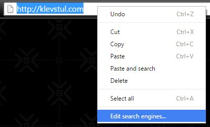

NoCountryRedirect (NCR)

Choose what domains you want NCRified:
Example:
If you set "blogspot.com" to be NCRified, this extension will
always redirect you from country specific blogspot domains to
'.com' addresses. Hence, if you type 'test.blogspot.co.jp', you
will be redirected to 'test.blogspot.com'.
Specify your country specific top level domain for opening links in "local mode" (without "." in front):
Example:
If you set this value to "co.kr", you will be go to "google.co.kr" if opening a local version of the search page when in South Korea.
Note:
Local domain setting has to represent the country you are in. The reason being is that when
you are in local mode, NCR is disabled. Hence Google will redirect you to your own country
specific domain.
Domains to ignore (without "http(s)://" in front):
You can enter up to 10 country specific (not .com) domains that you want the NCR extension to ignore. If an URL matches a domain in the list above, the URL will not be NCRified.
Users of this extension might experience multiple redirects doing Google searches.
Use case:
- An omibox search (search in Chrome's address bar) redirects the user to google.com
- google.com redirects the user to country specific top level domain, like google.co.jp
- The NCR extension redirects the user back to google.com
Below are a couple of workarounds for avoiding this annoyance.
google.com/ncr
- Go to google.com/ncr
- Close Chrome
- Launch Chrome again
Source: Google Operating System
encrypted.google.com
Update your default search engine to encrypted.google.com.
- Right click in the Chrome address bar.
- Chose the "Edit search engines..." option. 
- Edit your default search engine, and set the search URL to:
https://encrypted.google.com/search?hl=en&q=%s
NoCountryRedirect does not collect any data about its users. Data is only stored locally on user's devices (see "Local storage"), and never sent anywhere else nor sold to any third parties.
Intruduced in version 0.7.1409 was code for preventing endless loops. For doing this, it was crucial to save some browsing history in the browser's local storage. The browsing history for a tab is deleted as the tab is closed, but pressing the button below will delete all browsing information saved in the local storage.
There should be no need for pressing this button. It was added mainly for debugging purposes.
Note that you can view what is being stored by this (and other) extensions, using Chrome's developer mode for extensions, opening an extension's background page, and navigating to "Resources - Local Storage".
If you want to report a bug, or request a new feature, please visit the issues overview page on GitHub.
A few NCR-related places on the Internet: